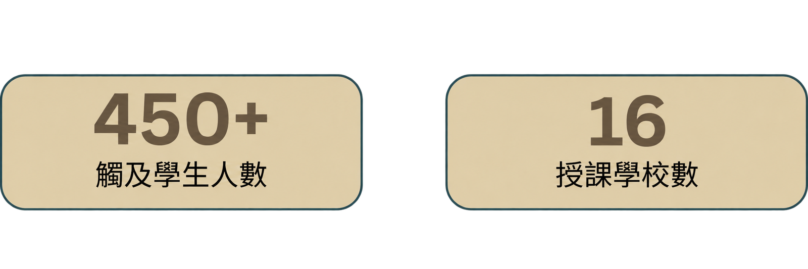

在 GEMS-台灣，我們所參與的 iGEM 計畫是一項國際性的合成生物學競賽，學生在其中設計以生物學為基礎的解決方案來應對現實世界的問題。 合成生物學是一個結合生物學與工程學的領域，透過重新設計生命系統來達成實用目的。我們的特別之處在於直接參與 iGEM 研究，因此能分享真實、第一線的專案實作經驗。
我們認為教育是 iGEM 中非常重要的一環，因為它讓我們能夠分享研究與想法，並將複雜的概念轉化為更容易理解的內容。透過我們的推廣活動，我們以簡單且有趣的方式介紹合成生物學等主題，即使是沒有相關背景的學生也能理解。我們也希望透過這些教育活動，讓不同年齡層的學生都能對這個領域產生興趣，並啟發他們去思考現實世界中的問題。
我們的目標是：
- 以互動方式將 STEM 學習融入學校教育
- 鼓勵學生對科學研究產生興趣
- 培養團隊合作、問題解決與溝通能力
- 幫助學生思考科學如何影響社會
合成生物學的獨特之處在於，它積極設計解決方案來應對現實世界的問題，而不僅僅是試圖理解問題而已。它與傳統生物學的差別在於將創造力與科學技術結合，強調創新和應用。這種方法使其能夠處理氣候變遷、糧食安全和永續農業等緊迫的全球挑戰，對下一代科學家和關心這些議題的有心人士尤其重要。因此，科學教育應該超越死記硬背，轉而優先考慮問題解決能力、批判性思考和實際應用。同時，科學教育也應該更加普及和包容，並鼓勵學生思考科學進步對更廣泛的社會和環境的影響。
以往團隊拓展地圖
點擊地圖上的某一點，即可查看每個外展地點發生的情況。

Luzhou Elementary School




2022 – 2025
Fusarium Won't
2022 年，GEMS-台灣致力於以合成生物學提出一項解決方案，協助防禦卡文迪許香蕉（Cavendish）植株免受枯萎病（Fusarium wilt，一種威脅全球香蕉作物的真菌性疾病）的侵害。他們的方法著重於工程化一種有益的益生菌，使其能保護香蕉根部，並有望減緩疾病的擴散。
Click Here to explore: https://2022.igem.wiki/gems-taiwan/index
Cure-All Reef
2023 年，團隊的專案「Cure-All Reef」旨在提升珊瑚礁的韌性。他們的合成生物學解決方案是工程化細菌，使其能更有效地向珊瑚傳遞益生菌，從而幫助珊瑚抵禦白化與疾病的影響。
Click Here to explore: https://2023.igem.wiki/gems-taiwan/
Dengue Beeters
2024 年，團隊開展了「Dengue Beeters」專案，透過合成生物學的方法對抗登革熱，利用創新的生物工具與設計來干擾蚊子的生活週期。該專案包含 3D 列印的誘卵桶（ovitrap）以及其他新穎的蚊蟲控制策略，有效協助抑制蚊蟲族群的數量。這些成果也讓團隊在競賽中表現優異，並於 iGEM Jamboree 高中組中榮獲大獎（Grand Prize）。
Click Here to explore: https://2024.igem.wiki/gems-taiwan/
Textile Fighters
2025 年，GEMS-台灣致力於解決紡織與塑膠廢棄物問題，重點放在分解這些通常難以回收的材料。團隊工程設計並測試多種酵素，使其能分解混紡布料中的成分，同時開發辨識與預處理不同紡織材料的方法，並建立工具以協助更有效地分類各類布料。
Click Here to explore: https://2025.igem.wiki/gems-taiwan/
ReLeaf
在2026年，GEMS-Taiwan團隊致力於開發一套利用基因改造細菌來幫助作物應對環境壓力的系統。此系統結合工程化微生物與監測技術，並在受控的生物反應器中運作，能夠偵測影響植物生長的高溫、乾旱與高鹽等逆境，並釋放有助於植物健康與韌性的生物活性物質。透過這樣的設計，團隊希望為面對氣候變遷的農業提供更永續且具適應性的解決方案。